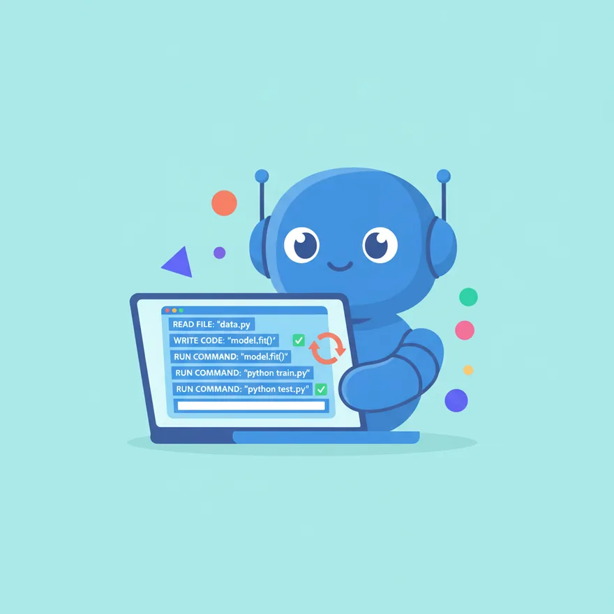

เวิร์กช็อป › เริ่มต้นกับ AI
เริ่มต้นกับ AI
เลือกเครื่องมือ AI ให้เหมาะกับงาน
รู้ใน 30 วิ
เริ่มทุกงานที่ Claude Code มันอ่านไฟล์ แก้โค้ด และรันคำสั่งได้เองในเครื่องคุณ เรียกเครื่องมืออื่นเฉพาะตอนที่ Claude Code ทำเองไม่ได้ เช่น สร้างรูปหรือวิดีโอ
เริ่มที่ Claude Codeทำงานจริง ในเทอร์มินัลรูป/วิดีโอ ค่อยเรียกตัวช่วย

ดู Claude Code ลงมือทำ
กดรัน แล้วดูมันทำงานทีละขั้นเอง
ดู Claude Code ทำงาน
คุณสร้างหน้าเว็บโปรไฟล์ง่าย ๆ พร้อมปุ่มติดต่อ
- ›อ่านโครงสร้างโปรเจกต์ index.html, style.css
- ›สร้างไฟล์ profile.html และเขียนโครงหน้า
- ›เพิ่มปุ่มติดต่อ จัดสไตล์ให้เรียบร้อย
- ›รันเซิร์ฟเวอร์ดูผลที่ localhost
- ✓เสร็จ เปิดดูหน้าโปรไฟล์ได้เลย
Claude Code คือ ตัวหลัก เพราะมันลงมือทำงานจริงได้เอง เครื่องมืออื่นเป็นแค่ตัวช่วยเฉพาะทาง
เมื่อไหร่ถึงเรียกตัวอื่น?
ส่วนใหญ่ Claude Code ทำได้หมด ยกเว้น 3 อย่างนี้
1
สร้างรูปภาพ
Claude Code เขียนโค้ดได้ แต่วาดรูปไม่ได้ ใช้ image gen เช่น Gemini แล้วเอารูปกลับมาให้ Claude Code ใส่ในเว็บ
2
สร้างวิดีโอหรือเสียง
งานมีเดียที่ต้องเรนเดอร์จริง ใช้เครื่องมือเฉพาะทาง แล้วให้ Claude Code จัดการไฟล์ต่อ
3
ถามความรู้สั้น ๆ
คำถามเร็ว ๆ ที่ไม่ต้องแตะโค้ด แชตธรรมดาก็พอ แต่พองานเริ่มแตะไฟล์ ให้กลับมาที่ Claude Code
ลองเลย จับมือทำ
- เปิดเทอร์มินัลในโฟลเดอร์โปรเจกต์ แล้วพิมพ์
claude - บอกเป้าหมายเป็นภาษาคน เช่น เพิ่มหน้า about ให้เว็บ
- ถ้างานต้องใช้รูป ให้ Claude Code ช่วยเขียน prompt รูป แล้วเอาไปสร้างที่ image gen
ลองใช้ Prompt นี้
ช่วยสร้างหน้าเว็บโปรไฟล์ให้หน่อย มีรูป ชื่อ คำอธิบายสั้น ๆ และปุ่มติดต่อ ถ้าต้องใช้รูปประกอบ ช่วยเขียน prompt สำหรับไปสร้างรูปให้ด้วย
สรุปเวิร์กช็อป
- เริ่มทุกงานที่ Claude Code เพราะมันทำงานจริงในเครื่องได้เอง
- เรียกเครื่องมืออื่นเฉพาะงานที่ Claude Code ทำไม่ได้ เช่น รูป วิดีโอ เสียง
- ให้ Claude Code เป็นคนคุมงาน แล้วเอาผลจากตัวช่วยกลับมารวมที่เดียว
แบบทดสอบท้ายเวิร์กช็อป
ลองตอบดู แล้วระบบจะเฉลยให้ทันที
ข้อ 1.งานส่วนใหญ่ควรเริ่มที่เครื่องมือไหน?
เฉลย: Claude Code เป็นตัวหลัก เริ่มที่นี่เพราะมันลงมือทำงานจริงในเครื่องได้เอง
ข้อ 2.ตอนไหนที่ควรเรียกเครื่องมืออื่นมาช่วย?
เฉลย: Claude Code สร้างรูปเองไม่ได้ ใช้ image gen แล้วเอารูปกลับมาให้ Claude Code ใส่ในงาน